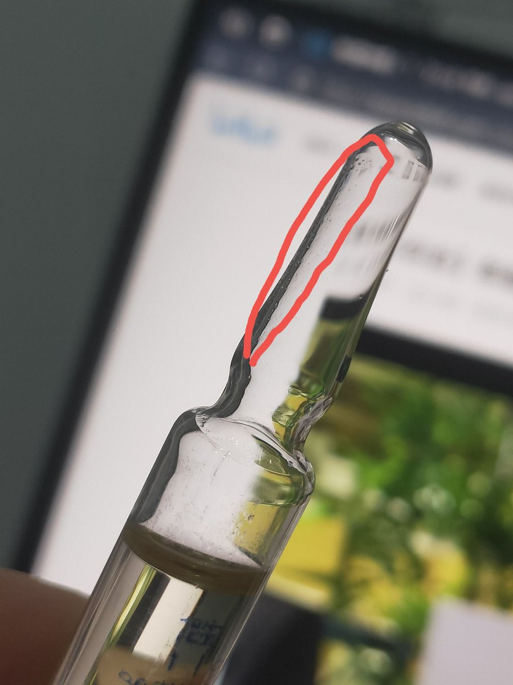
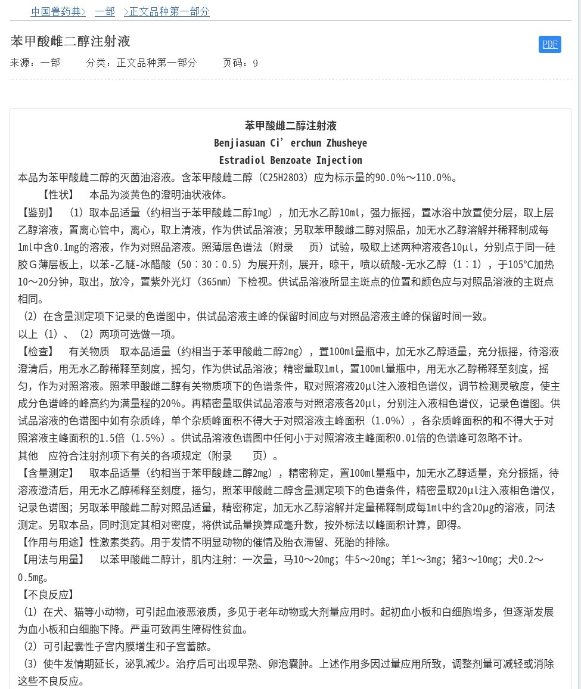

@lyjjlch 并非。GMP 事实上反应不了产品是否安全，只能证明流程可控和产物正确。人药还有 ICH Q3A/B/D 规范杂质成分和中间溶剂残留检测。而且我不觉得兽药在不一定有 CSV、ALCOA+、CPV 的情况下可以自发地监管。下附一张真实的兽雌产品杂质图片




我注意到，兽用苯甲酸雌二醇注射液和人用苯甲酸雌二醇注射液在药典上的检验方法和标准几乎完全相同。
同时，兽药GMP验收标准和人用药GMP验收标准采用几乎完全相同的框架，有极高重合度。
那么，是否意味着，只要一切按照规定执行，那么注射剂品质上讲，二者并无明显差异 https://t.co/ZUcUIgTXsa https://t.co/5GDcF14H0i
同时，兽药GMP验收标准和人用药GMP验收标准采用几乎完全相同的框架，有极高重合度。
那么，是否意味着，只要一切按照规定执行，那么注射剂品质上讲，二者并无明显差异 https://t.co/ZUcUIgTXsa https://t.co/5GDcF14H0i